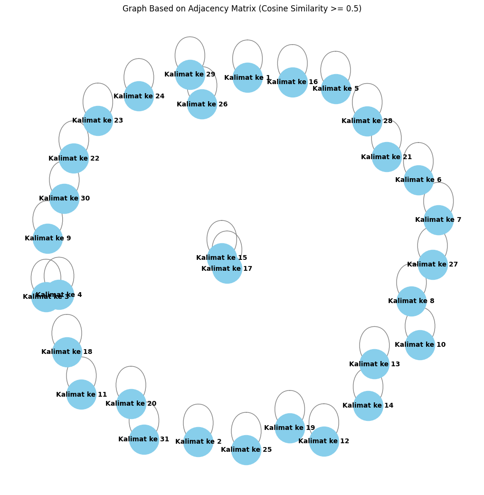

Tugas 4#
from google.colab import drive
drive.mount('/content/drive')
Drive already mounted at /content/drive; to attempt to forcibly remount, call drive.mount("/content/drive", force_remount=True).
import pandas as pd
df = pd.read_csv("/content/drive/My Drive/ppw/report/tugas-ppw/data_berita_detik.csv")
df.head()
| judul | tanggal | isi | kategori | |
|---|---|---|---|---|
| 0 | Waspadai 7 Tanda Tubuh Kekurangan Vitamin B12,... | Rabu, 02 Okt 2024 20:08 WIB | Jakarta - Vitamin B12 adalah nutrisi penting y... | Kesehatan |
| 1 | Bentuk Tubuh Seperti Ini Disebut Lebih Berisik... | Rabu, 02 Okt 2024 19:00 WIB | Jakarta - Sudah sejak lama peneliti mengukur r... | Kesehatan |
| 2 | Apa yang Terjadi Jika Kadar Gula Darah Tinggi?... | Rabu, 02 Okt 2024 18:00 WIB | Jakarta - Gula darah yang tinggi atau hipergli... | Kesehatan |
| 3 | Wajib Perhatikan, Ini Tanda Pekerja Stres dan ... | Rabu, 02 Okt 2024 16:31 WIB | Jakarta - Setiap pekerjaan pasti memiliki beba... | Kesehatan |
| 4 | Menyoal Sindrom Kematian Mendadak, Ini Penyeba... | Rabu, 02 Okt 2024 16:03 WIB | Jakarta - Sindrom kematian mendadak adalah ist... | Kesehatan |
# mengambil satu sample berita
sample_berita = df['isi'].iloc[1]
print(sample_berita)
Jakarta - Sudah sejak lama peneliti mengukur risiko penyakit kronis berdasarkan indeks massa tubuh atau body mass index (BMI). Namun sebuah studi baru di China mengungkap bahwa indeks kebulatan tubuh atau body roundness index (BRI) menjadi indikator yang lebih baik dalam kaitannya dengan risiko penyakit kronis. body mass index (BMI) adalah cara menghitung berat badan ideal berdasarkan tinggi dan berat badan. Sementara body roundness index (BRI) adalah cara menghitung berat badan ideal mengukur tinggi badan, berat badan, lingkar pinggang, dan terkadang lingkar pinggul. Penelitian tersebut meneliti 10 ribu orang dewasa di china berusia 45 tahun atau lebih. Mereka menggunakan data dari China Health and Retirement Longitudinal study, yakni orang dewasa China mengukur pinggang mereka setiap dua tahun sekali, dari 2011 hingga 2020. Peneliti kemudian menganalisis lintasan pengukuran BRI dari waktu ke waktu, serta menempatkan peserta ke dalam tiga kelompok. Di antaranya BRI rendah, sedang, dan tinggi. Adapun rumus menghitung BRI adalah Lingkar Pinggang (cm)/Tinggi Badan (cm). Nilai BRI lebih tinggi menunjukkan proporsi tubuh yang lebih bulat. Kondisi ini mengindikasikan adanya penumpukan lemak di area perut. Meski begitu, perlu diingat bahwa nilai BRI yang normal dapat bervariasi tergantung pada populasi dan faktor lainnya. Lebih lanjut, selama empat tahun terakhir penelitian, dari 2017 hingga 2020, tercatat ada 3.052 kejadian terkait penyakit jantung, termasuk 894 kematian. Peneliti menemukan bahwa risiko penyakit jantung pada kelompok BRI sedang 61 persen lebih tinggi daripada kelompok BRI rendah. Begitu juga perbedaan risiko antara BMI tinggi dan rendah adalah 163 persen. Artinya, peserta yang memiliki BRI tinggi memiliki risiko penyakit jantung 163 persen lebih tinggi daripada peserta dalam kelompok BRI rendah. Bahkan ketika peneliti melihat faktor-faktor seperti tekanan darah, kadar kolesterol, dan riwayat medis, orang-orang dengan BRI tinggi secara signifikan lebih mungkin terkena penyakit jantung. "Temuan kami menunjukkan bahwa BRI stabil sedang hingga tinggi selama enam tahun tampaknya meningkatkan risiko penyakit kardiovaskular, yang menunjukkan bahwa pengukuran BRI berpotensi digunakan sebagai faktor prediktif untuk kejadian kardiovaskular," kata penulis studi senior Dr Yun Qian, peneliti penyakit kronis di Pusat Pengendalian dan Pencegahan Penyakit Wuxi, Universitas Kedokteran Nanjing, China, dalam sebuah pernyataan, dikutip dari Newsweek. "Hal ini dapat dijelaskan oleh korelasi antara obesitas dan hipertensi, kolesterol tinggi, dan diabetes tipe 2, yang semuanya merupakan faktor risiko penyakit kardiovaskular. Obesitas juga terbukti menyebabkan peradangan dan mekanisme lain dalam tubuh yang dapat memengaruhi jantung dan fungsi jantung," lanjutnya lagi. Peneliti mengatakan, BRI bisa menjadi prediktor yang lebih akurat dibanding BMI dalam mengukur risiko penyakit terkait gaya hidup, seperti penyakit kardiovaskular. BMI telah lama dikritik sebagai instrumen kurang akurat karena tidak memperhitungkan komposisi tubuh. Hal ini membuat seseorang dengan otot besar bisa digolongkan sebagai orang dengan obesitas karena memiliki BMI tinggi, padahal berat badan ekstra mereka berasal dari otot, bukan lemak. Lebih lanjut, BRI secara khusus berfokus pada lingkar pinggang yang menurut penelitian sebelumnya bisa mengukur risiko penyakit jantung lebih akurat daripada obesitas yang ditentukan oleh BMI. "Ini adalah studi besar pertama yang mengevaluasi BRI dari waktu ke waktu dan bagaimana hal itu dapat dikaitkan dengan kejadian penyakit kardiovaskular di kalangan orang dewasa China setengah baya dan lebih tua," kata Qian. Di sisi lain, penelitian ini juga memiliki sejumlah keterbatasan. Misalnya, para peneliti mengandalkan peserta untuk melaporkan serangan jantung, stroke, penyakit jantung koroner, atau kemungkinan kejadian diagnosis penyakit jantung lainnya. Karena itu, data ini mungkin tak seakurat jika para ilmuwan atau dokter peserta menyampaikan informasi ini. Selain itu, semua peserta adalah orang dewasa Tionghoa, denggan usia rata-rata 58 tahun, jadi hasil ini mungkin tak dapat digeneralisasikan untuk populasi dengan etnis dan usia yang berbeda. (suc/kna)
memisahkan per kalimat
# Membuat list untuk menyimpan hasil
result_list = []
# Pisahkan kalimat berdasarkan titik
sentences = sample_berita.split('.') # Pisahkan kalimat berdasarkan titik
sentences = [s.strip() for s in sentences if s.strip()] # Hilangkan spasi berlebih dan kosong
# Looping untuk menambahkan setiap kalimat ke result_list
for i, sentence in enumerate(sentences, 1):
result_list.append({'kalimat ke n': f"Kalimat ke {i}", 'kalimat': sentence})
# Membuat DataFrame dari hasil pemisahan
result_df = pd.DataFrame(result_list)
# Tampilkan DataFrame
result_df
| kalimat ke n | kalimat | |
|---|---|---|
| 0 | Kalimat ke 1 | Jakarta - Sudah sejak lama peneliti mengukur r... |
| 1 | Kalimat ke 2 | Namun sebuah studi baru di China mengungkap ba... |
| 2 | Kalimat ke 3 | body mass index (BMI) adalah cara menghitung b... |
| 3 | Kalimat ke 4 | Sementara body roundness index (BRI) adalah ca... |
| 4 | Kalimat ke 5 | Penelitian tersebut meneliti 10 ribu orang dew... |
| 5 | Kalimat ke 6 | Mereka menggunakan data dari China Health and ... |
| 6 | Kalimat ke 7 | Peneliti kemudian menganalisis lintasan penguk... |
| 7 | Kalimat ke 8 | Di antaranya BRI rendah, sedang, dan tinggi |
| 8 | Kalimat ke 9 | Adapun rumus menghitung BRI adalah Lingkar Pin... |
| 9 | Kalimat ke 10 | Nilai BRI lebih tinggi menunjukkan proporsi tu... |
| 10 | Kalimat ke 11 | Kondisi ini mengindikasikan adanya penumpukan ... |
| 11 | Kalimat ke 12 | Meski begitu, perlu diingat bahwa nilai BRI ya... |
| 12 | Kalimat ke 13 | Lebih lanjut, selama empat tahun terakhir pene... |
| 13 | Kalimat ke 14 | 052 kejadian terkait penyakit jantung, termasu... |
| 14 | Kalimat ke 15 | Peneliti menemukan bahwa risiko penyakit jantu... |
| 15 | Kalimat ke 16 | Begitu juga perbedaan risiko antara BMI tinggi... |
| 16 | Kalimat ke 17 | Artinya, peserta yang memiliki BRI tinggi memi... |
| 17 | Kalimat ke 18 | Bahkan ketika peneliti melihat faktor-faktor s... |
| 18 | Kalimat ke 19 | "Temuan kami menunjukkan bahwa BRI stabil seda... |
| 19 | Kalimat ke 20 | "Hal ini dapat dijelaskan oleh korelasi antara... |
| 20 | Kalimat ke 21 | Obesitas juga terbukti menyebabkan peradangan ... |
| 21 | Kalimat ke 22 | Peneliti mengatakan, BRI bisa menjadi predikto... |
| 22 | Kalimat ke 23 | BMI telah lama dikritik sebagai instrumen kura... |
| 23 | Kalimat ke 24 | Hal ini membuat seseorang dengan otot besar bi... |
| 24 | Kalimat ke 25 | Lebih lanjut, BRI secara khusus berfokus pada ... |
| 25 | Kalimat ke 26 | "Ini adalah studi besar pertama yang mengevalu... |
| 26 | Kalimat ke 27 | Di sisi lain, penelitian ini juga memiliki sej... |
| 27 | Kalimat ke 28 | Misalnya, para peneliti mengandalkan peserta u... |
| 28 | Kalimat ke 29 | Karena itu, data ini mungkin tak seakurat jika... |
| 29 | Kalimat ke 30 | Selain itu, semua peserta adalah orang dewasa ... |
| 30 | Kalimat ke 31 | (suc/kna) |
pre processing
!pip install Sastrawi
Requirement already satisfied: Sastrawi in /usr/local/lib/python3.10/dist-packages (1.0.1)
import pandas as pd
import numpy as np
import re
import nltk
from nltk.corpus import stopwords
from Sastrawi.Stemmer.StemmerFactory import StemmerFactory
from sklearn.feature_extraction.text import TfidfVectorizer
from sklearn.metrics.pairwise import cosine_similarity
import nltk
from nltk.tokenize import sent_tokenize
import networkx as nx
import matplotlib.pyplot as plt
# Download stopwords untuk bahasa Indonesia
nltk.download('stopwords')
stop_words = stopwords.words('indonesian')
# Fungsi preprocessing yang disesuaikan
def remove_url(data_berita):
url = re.compile(r'https?://\S+|www\.S+')
return url.sub(r'', data_berita)
def remove_html(data_berita):
html = re.compile(r'<.#?>')
return html.sub(r'', data_berita)
def remove_emoji(data_berita):
emoji_pattern = re.compile("["
u"\U0001F600-\U0001F64F" # emoticon
u"\U0001F300-\U0001F5FF" # symbols & pictographs
u"\U0001F680-\U0001F6FF" # transport & map symbols
u"\U0001F1E0-\U0001F1FF" # flags (iOS)
"]+", flags=re.UNICODE)
return emoji_pattern.sub(r'', data_berita)
def remove_numbers(data_berita):
data_berita = re.sub(r'\d+', '', data_berita)
return data_berita
def remove_symbols(data_berita):
data_berita = re.sub(r'[^a-zA-Z0-9\s]', '', data_berita)
return data_berita
def case_folding(text):
if isinstance(text, str):
return text.lower()
return text
def tokenize(text):
return text.split()
def remove_stopwords(text):
return [word for word in text if word not in stop_words]
# Inisialisasi stemmer
factory = StemmerFactory()
stemmer = factory.create_stemmer()
def stemming(text):
return [stemmer.stem(word) for word in text]
# Looping setiap kalimat di dataframe 'result_df'
result_df['clean'] = result_df['kalimat'].apply(remove_url)
result_df['clean'] = result_df['clean'].apply(remove_html)
result_df['clean'] = result_df['clean'].apply(remove_emoji)
result_df['clean'] = result_df['clean'].apply(remove_symbols)
result_df['clean'] = result_df['clean'].apply(remove_numbers)
result_df['clean'] = result_df['clean'].apply(case_folding)
result_df['tokenize'] = result_df['clean'].apply(tokenize)
result_df['stopword removal'] = result_df['tokenize'].apply(remove_stopwords)
result_df['stemming'] = result_df['stopword removal'].apply(stemming)
# Gabungkan kata setelah stemming
result_df['final'] = result_df['stemming'].apply(lambda x: ' '.join(x))
# Tampilkan hasil dataframe
result_df[['kalimat ke n', 'final']]
[nltk_data] Downloading package stopwords to /root/nltk_data...
[nltk_data] Package stopwords is already up-to-date!
| kalimat ke n | final | |
|---|---|---|
| 0 | Kalimat ke 1 | jakarta teliti ukur risiko sakit kronis dasar ... |
| 1 | Kalimat ke 2 | studi china ungkap indeks bulat tubuh body rou... |
| 2 | Kalimat ke 3 | body mass index bmi hitung berat badan ideal d... |
| 3 | Kalimat ke 4 | body roundness index bri hitung berat badan id... |
| 4 | Kalimat ke 5 | teliti teliti ribu orang dewasa china usia |
| 5 | Kalimat ke 6 | data china health and retirement longitudinal ... |
| 6 | Kalimat ke 7 | teliti analis lintas ukur bri tempat serta kel... |
| 7 | Kalimat ke 8 | bri rendah |
| 8 | Kalimat ke 9 | rumus hitung bri lingkar pinggang cmtinggi bad... |
| 9 | Kalimat ke 10 | nilai bri proporsi tubuh bulat |
| 10 | Kalimat ke 11 | kondisi indikasi tumpu lemak area perut |
| 11 | Kalimat ke 12 | nilai bri normal variasi gantung populasi faktor |
| 12 | Kalimat ke 13 | teliti catat |
| 13 | Kalimat ke 14 | jadi kait sakit jantung mati |
| 14 | Kalimat ke 15 | teliti temu risiko sakit jantung kelompok bri ... |
| 15 | Kalimat ke 16 | beda risiko bmi rendah persen |
| 16 | Kalimat ke 17 | serta milik bri milik risiko sakit jantung per... |
| 17 | Kalimat ke 18 | teliti faktorfaktor tekan darah kadar kolester... |
| 18 | Kalimat ke 19 | temu bri stabil enam tingkat risiko sakit kard... |
| 19 | Kalimat ke 20 | korelasi obesitas hipertensi kolesterol diabet... |
| 20 | Kalimat ke 21 | obesitas bukti sebab adang mekanisme tubuh pen... |
| 21 | Kalimat ke 22 | teliti bri prediktor akurat banding bmi ukur r... |
| 22 | Kalimat ke 23 | bmi kritik instrumen akurat hitung komposisi t... |
| 23 | Kalimat ke 24 | otot golong orang obesitas milik bmi berat bad... |
| 24 | Kalimat ke 25 | bri khusus fokus lingkar pinggang teliti ukur ... |
| 25 | Kalimat ke 26 | studi evaluasi bri kait jadi sakit kardiovasku... |
| 26 | Kalimat ke 27 | sisi teliti milik batas |
| 27 | Kalimat ke 28 | teliti andal serta lapor serang jantung stroke... |
| 28 | Kalimat ke 29 | data akurat ilmuwan dokter serta informasi |
| 29 | Kalimat ke 30 | serta orang dewasa tionghoa denggan usia ratar... |
| 30 | Kalimat ke 31 | suckna |
TF-IDF
# Gabungkan semua kalimat hasil stemming menjadi dokumen untuk tiap kalimat
documents = result_df['final'].tolist()
# Inisialisasi TF-IDF Vectorizer
tfidf_vectorizer = TfidfVectorizer()
# Terapkan TF-IDF ke dokumen (kalimat yang sudah dipreproses)
tfidf_matrix = tfidf_vectorizer.fit_transform(documents)
# Mendapatkan nama-nama fitur (kata-kata)
feature_names = tfidf_vectorizer.get_feature_names_out()
# Mengubah hasil TF-IDF menjadi dataframe
tfidf_df = pd.DataFrame(tfidf_matrix.toarray(), columns=feature_names)
# Tambahkan kolom 'no' dan 'kalimat ke n' untuk identifikasi
tfidf_df.insert(0, 'kalimat ke n', result_df['kalimat ke n'])
# Tampilkan dataframe dengan skor TF-IDF
tfidf_df
| kalimat ke n | adang | akurat | analis | and | andal | area | asal | badan | banding | ... | tubuh | tulis | tumpu | ukur | ungkap | universitas | usia | variasi | wuxi | yun | |
|---|---|---|---|---|---|---|---|---|---|---|---|---|---|---|---|---|---|---|---|---|---|
| 0 | Kalimat ke 1 | 0.0000 | 0.000000 | 0.000000 | 0.000000 | 0.000000 | 0.000000 | 0.000000 | 0.000000 | 0.000000 | ... | 0.245090 | 0.000000 | 0.000000 | 0.218722 | 0.00000 | 0.000000 | 0.000000 | 0.000000 | 0.000000 | 0.000000 |
| 1 | Kalimat ke 2 | 0.0000 | 0.000000 | 0.000000 | 0.000000 | 0.000000 | 0.000000 | 0.000000 | 0.000000 | 0.000000 | ... | 0.233093 | 0.000000 | 0.000000 | 0.000000 | 0.32886 | 0.000000 | 0.000000 | 0.000000 | 0.000000 | 0.000000 |
| 2 | Kalimat ke 3 | 0.0000 | 0.000000 | 0.000000 | 0.000000 | 0.000000 | 0.000000 | 0.000000 | 0.492122 | 0.000000 | ... | 0.000000 | 0.000000 | 0.000000 | 0.000000 | 0.00000 | 0.000000 | 0.000000 | 0.000000 | 0.000000 | 0.000000 |
| 3 | Kalimat ke 4 | 0.0000 | 0.000000 | 0.000000 | 0.000000 | 0.000000 | 0.000000 | 0.000000 | 0.551003 | 0.000000 | ... | 0.000000 | 0.000000 | 0.000000 | 0.153445 | 0.00000 | 0.000000 | 0.000000 | 0.000000 | 0.000000 | 0.000000 |
| 4 | Kalimat ke 5 | 0.0000 | 0.000000 | 0.000000 | 0.000000 | 0.000000 | 0.000000 | 0.000000 | 0.000000 | 0.000000 | ... | 0.000000 | 0.000000 | 0.000000 | 0.000000 | 0.00000 | 0.000000 | 0.421803 | 0.000000 | 0.000000 | 0.000000 |
| 5 | Kalimat ke 6 | 0.0000 | 0.000000 | 0.000000 | 0.318544 | 0.000000 | 0.000000 | 0.000000 | 0.000000 | 0.000000 | ... | 0.000000 | 0.000000 | 0.000000 | 0.201490 | 0.00000 | 0.000000 | 0.000000 | 0.000000 | 0.000000 | 0.000000 |
| 6 | Kalimat ke 7 | 0.0000 | 0.000000 | 0.444487 | 0.000000 | 0.000000 | 0.000000 | 0.000000 | 0.000000 | 0.000000 | ... | 0.000000 | 0.000000 | 0.000000 | 0.281153 | 0.00000 | 0.000000 | 0.000000 | 0.000000 | 0.000000 | 0.000000 |
| 7 | Kalimat ke 8 | 0.0000 | 0.000000 | 0.000000 | 0.000000 | 0.000000 | 0.000000 | 0.000000 | 0.000000 | 0.000000 | ... | 0.000000 | 0.000000 | 0.000000 | 0.000000 | 0.00000 | 0.000000 | 0.000000 | 0.000000 | 0.000000 | 0.000000 |
| 8 | Kalimat ke 9 | 0.0000 | 0.000000 | 0.000000 | 0.000000 | 0.000000 | 0.000000 | 0.000000 | 0.319854 | 0.000000 | ... | 0.000000 | 0.000000 | 0.000000 | 0.000000 | 0.00000 | 0.000000 | 0.000000 | 0.000000 | 0.000000 | 0.000000 |
| 9 | Kalimat ke 10 | 0.0000 | 0.000000 | 0.000000 | 0.000000 | 0.000000 | 0.000000 | 0.000000 | 0.000000 | 0.000000 | ... | 0.389431 | 0.000000 | 0.000000 | 0.000000 | 0.00000 | 0.000000 | 0.000000 | 0.000000 | 0.000000 | 0.000000 |
| 10 | Kalimat ke 11 | 0.0000 | 0.000000 | 0.000000 | 0.000000 | 0.000000 | 0.415349 | 0.000000 | 0.000000 | 0.000000 | ... | 0.000000 | 0.000000 | 0.415349 | 0.000000 | 0.00000 | 0.000000 | 0.000000 | 0.000000 | 0.000000 | 0.000000 |
| 11 | Kalimat ke 12 | 0.0000 | 0.000000 | 0.000000 | 0.000000 | 0.000000 | 0.000000 | 0.000000 | 0.000000 | 0.000000 | ... | 0.000000 | 0.000000 | 0.000000 | 0.000000 | 0.00000 | 0.000000 | 0.000000 | 0.427313 | 0.000000 | 0.000000 |
| 12 | Kalimat ke 13 | 0.0000 | 0.000000 | 0.000000 | 0.000000 | 0.000000 | 0.000000 | 0.000000 | 0.000000 | 0.000000 | ... | 0.000000 | 0.000000 | 0.000000 | 0.000000 | 0.00000 | 0.000000 | 0.000000 | 0.000000 | 0.000000 | 0.000000 |
| 13 | Kalimat ke 14 | 0.0000 | 0.000000 | 0.000000 | 0.000000 | 0.000000 | 0.000000 | 0.000000 | 0.000000 | 0.000000 | ... | 0.000000 | 0.000000 | 0.000000 | 0.000000 | 0.00000 | 0.000000 | 0.000000 | 0.000000 | 0.000000 | 0.000000 |
| 14 | Kalimat ke 15 | 0.0000 | 0.000000 | 0.000000 | 0.000000 | 0.000000 | 0.000000 | 0.000000 | 0.000000 | 0.000000 | ... | 0.000000 | 0.000000 | 0.000000 | 0.000000 | 0.00000 | 0.000000 | 0.000000 | 0.000000 | 0.000000 | 0.000000 |
| 15 | Kalimat ke 16 | 0.0000 | 0.000000 | 0.000000 | 0.000000 | 0.000000 | 0.000000 | 0.000000 | 0.000000 | 0.000000 | ... | 0.000000 | 0.000000 | 0.000000 | 0.000000 | 0.00000 | 0.000000 | 0.000000 | 0.000000 | 0.000000 | 0.000000 |
| 16 | Kalimat ke 17 | 0.0000 | 0.000000 | 0.000000 | 0.000000 | 0.000000 | 0.000000 | 0.000000 | 0.000000 | 0.000000 | ... | 0.000000 | 0.000000 | 0.000000 | 0.000000 | 0.00000 | 0.000000 | 0.000000 | 0.000000 | 0.000000 | 0.000000 |
| 17 | Kalimat ke 18 | 0.0000 | 0.000000 | 0.000000 | 0.000000 | 0.000000 | 0.000000 | 0.000000 | 0.000000 | 0.000000 | ... | 0.000000 | 0.000000 | 0.000000 | 0.000000 | 0.00000 | 0.000000 | 0.000000 | 0.000000 | 0.000000 | 0.000000 |
| 18 | Kalimat ke 19 | 0.0000 | 0.000000 | 0.000000 | 0.000000 | 0.000000 | 0.000000 | 0.000000 | 0.000000 | 0.000000 | ... | 0.000000 | 0.182834 | 0.000000 | 0.115649 | 0.00000 | 0.182834 | 0.000000 | 0.000000 | 0.182834 | 0.182834 |
| 19 | Kalimat ke 20 | 0.0000 | 0.000000 | 0.000000 | 0.000000 | 0.000000 | 0.000000 | 0.000000 | 0.000000 | 0.000000 | ... | 0.000000 | 0.000000 | 0.000000 | 0.000000 | 0.00000 | 0.000000 | 0.000000 | 0.000000 | 0.000000 | 0.000000 |
| 20 | Kalimat ke 21 | 0.3395 | 0.000000 | 0.000000 | 0.000000 | 0.000000 | 0.000000 | 0.000000 | 0.000000 | 0.000000 | ... | 0.240635 | 0.000000 | 0.000000 | 0.000000 | 0.00000 | 0.000000 | 0.000000 | 0.000000 | 0.000000 | 0.000000 |
| 21 | Kalimat ke 22 | 0.0000 | 0.261904 | 0.000000 | 0.000000 | 0.000000 | 0.000000 | 0.000000 | 0.000000 | 0.345923 | ... | 0.000000 | 0.000000 | 0.000000 | 0.218808 | 0.00000 | 0.000000 | 0.000000 | 0.000000 | 0.000000 | 0.000000 |
| 22 | Kalimat ke 23 | 0.0000 | 0.336949 | 0.000000 | 0.000000 | 0.000000 | 0.000000 | 0.000000 | 0.000000 | 0.000000 | ... | 0.315441 | 0.000000 | 0.000000 | 0.000000 | 0.00000 | 0.000000 | 0.000000 | 0.000000 | 0.000000 | 0.000000 |
| 23 | Kalimat ke 24 | 0.0000 | 0.000000 | 0.000000 | 0.000000 | 0.000000 | 0.000000 | 0.299099 | 0.226454 | 0.000000 | ... | 0.000000 | 0.000000 | 0.000000 | 0.000000 | 0.00000 | 0.000000 | 0.000000 | 0.000000 | 0.000000 | 0.000000 |
| 24 | Kalimat ke 25 | 0.0000 | 0.273528 | 0.000000 | 0.000000 | 0.000000 | 0.000000 | 0.000000 | 0.000000 | 0.000000 | ... | 0.000000 | 0.000000 | 0.000000 | 0.228519 | 0.00000 | 0.000000 | 0.000000 | 0.000000 | 0.000000 | 0.000000 |
| 25 | Kalimat ke 26 | 0.0000 | 0.000000 | 0.000000 | 0.000000 | 0.000000 | 0.000000 | 0.000000 | 0.000000 | 0.000000 | ... | 0.000000 | 0.000000 | 0.000000 | 0.000000 | 0.00000 | 0.000000 | 0.000000 | 0.000000 | 0.000000 | 0.000000 |
| 26 | Kalimat ke 27 | 0.0000 | 0.000000 | 0.000000 | 0.000000 | 0.000000 | 0.000000 | 0.000000 | 0.000000 | 0.000000 | ... | 0.000000 | 0.000000 | 0.000000 | 0.000000 | 0.00000 | 0.000000 | 0.000000 | 0.000000 | 0.000000 | 0.000000 |
| 27 | Kalimat ke 28 | 0.0000 | 0.000000 | 0.000000 | 0.000000 | 0.289065 | 0.000000 | 0.000000 | 0.000000 | 0.000000 | ... | 0.000000 | 0.000000 | 0.000000 | 0.000000 | 0.00000 | 0.000000 | 0.000000 | 0.000000 | 0.000000 | 0.000000 |
| 28 | Kalimat ke 29 | 0.0000 | 0.350397 | 0.000000 | 0.000000 | 0.000000 | 0.000000 | 0.000000 | 0.000000 | 0.000000 | ... | 0.000000 | 0.000000 | 0.000000 | 0.000000 | 0.00000 | 0.000000 | 0.000000 | 0.000000 | 0.000000 | 0.000000 |
| 29 | Kalimat ke 30 | 0.0000 | 0.000000 | 0.000000 | 0.000000 | 0.000000 | 0.000000 | 0.000000 | 0.000000 | 0.000000 | ... | 0.000000 | 0.000000 | 0.000000 | 0.000000 | 0.00000 | 0.000000 | 0.507788 | 0.000000 | 0.000000 | 0.000000 |
| 30 | Kalimat ke 31 | 0.0000 | 0.000000 | 0.000000 | 0.000000 | 0.000000 | 0.000000 | 0.000000 | 0.000000 | 0.000000 | ... | 0.000000 | 0.000000 | 0.000000 | 0.000000 | 0.00000 | 0.000000 | 0.000000 | 0.000000 | 0.000000 | 0.000000 |
31 rows × 149 columns
# Menghitung cosine similarity antar kalimat berdasarkan TF-IDF
cosine_sim = cosine_similarity(tfidf_matrix)
# Membuat dataframe untuk menyimpan hasil cosine similarity
cosine_sim_df = pd.DataFrame(cosine_sim, index=result_df['kalimat ke n'], columns=result_df['kalimat ke n'])
# Tampilkan matriks cosine similarity
cosine_sim_df
| kalimat ke n | Kalimat ke 1 | Kalimat ke 2 | Kalimat ke 3 | Kalimat ke 4 | Kalimat ke 5 | Kalimat ke 6 | Kalimat ke 7 | Kalimat ke 8 | Kalimat ke 9 | Kalimat ke 10 | ... | Kalimat ke 22 | Kalimat ke 23 | Kalimat ke 24 | Kalimat ke 25 | Kalimat ke 26 | Kalimat ke 27 | Kalimat ke 28 | Kalimat ke 29 | Kalimat ke 30 | Kalimat ke 31 |
|---|---|---|---|---|---|---|---|---|---|---|---|---|---|---|---|---|---|---|---|---|---|
| kalimat ke n | |||||||||||||||||||||
| Kalimat ke 1 | 1.000000 | 0.420104 | 0.352843 | 0.129731 | 0.090104 | 0.044070 | 0.103867 | 0.000000 | 0.000000 | 0.095446 | ... | 0.228749 | 0.138882 | 0.041380 | 0.207188 | 0.028891 | 0.055578 | 0.078304 | 0.000000 | 0.000000 | 0.0 |
| Kalimat ke 2 | 0.420104 | 1.000000 | 0.122531 | 0.172329 | 0.078079 | 0.105256 | 0.031730 | 0.080300 | 0.030158 | 0.273929 | ... | 0.185063 | 0.073527 | 0.000000 | 0.095011 | 0.239510 | 0.000000 | 0.048264 | 0.000000 | 0.000000 | 0.0 |
| Kalimat ke 3 | 0.352843 | 0.122531 | 1.000000 | 0.679668 | 0.000000 | 0.000000 | 0.000000 | 0.000000 | 0.236111 | 0.000000 | ... | 0.044981 | 0.140779 | 0.279871 | 0.046977 | 0.000000 | 0.000000 | 0.000000 | 0.000000 | 0.000000 | 0.0 |
| Kalimat ke 4 | 0.129731 | 0.172329 | 0.679668 | 1.000000 | 0.000000 | 0.075214 | 0.066548 | 0.059235 | 0.452550 | 0.028932 | ... | 0.051791 | 0.061887 | 0.221466 | 0.221117 | 0.017332 | 0.000000 | 0.000000 | 0.000000 | 0.000000 | 0.0 |
| Kalimat ke 5 | 0.090104 | 0.078079 | 0.000000 | 0.000000 | 1.000000 | 0.313187 | 0.115823 | 0.000000 | 0.000000 | 0.000000 | ... | 0.090139 | 0.000000 | 0.071014 | 0.094140 | 0.245448 | 0.151920 | 0.075324 | 0.000000 | 0.358790 | 0.0 |
| Kalimat ke 6 | 0.044070 | 0.105256 | 0.000000 | 0.075214 | 0.313187 | 1.000000 | 0.056650 | 0.000000 | 0.077141 | 0.000000 | ... | 0.044088 | 0.000000 | 0.047865 | 0.112013 | 0.218111 | 0.000000 | 0.000000 | 0.117437 | 0.097467 | 0.0 |
| Kalimat ke 7 | 0.103867 | 0.031730 | 0.000000 | 0.066548 | 0.115823 | 0.056650 | 1.000000 | 0.108534 | 0.040761 | 0.053012 | ... | 0.137284 | 0.000000 | 0.000000 | 0.143377 | 0.031756 | 0.071442 | 0.099971 | 0.103346 | 0.063523 | 0.0 |
| Kalimat ke 8 | 0.000000 | 0.080300 | 0.000000 | 0.059235 | 0.000000 | 0.000000 | 0.108534 | 1.000000 | 0.103156 | 0.134159 | ... | 0.084467 | 0.000000 | 0.000000 | 0.088216 | 0.080366 | 0.000000 | 0.000000 | 0.000000 | 0.000000 | 0.0 |
| Kalimat ke 9 | 0.000000 | 0.030158 | 0.236111 | 0.452550 | 0.000000 | 0.077141 | 0.040761 | 0.103156 | 1.000000 | 0.050385 | ... | 0.031723 | 0.107774 | 0.072432 | 0.222313 | 0.030182 | 0.000000 | 0.000000 | 0.000000 | 0.000000 | 0.0 |
| Kalimat ke 10 | 0.095446 | 0.273929 | 0.000000 | 0.028932 | 0.000000 | 0.000000 | 0.053012 | 0.134159 | 0.050385 | 1.000000 | ... | 0.041257 | 0.122842 | 0.000000 | 0.043088 | 0.039254 | 0.000000 | 0.000000 | 0.000000 | 0.000000 | 0.0 |
| Kalimat ke 11 | 0.000000 | 0.000000 | 0.000000 | 0.000000 | 0.000000 | 0.000000 | 0.000000 | 0.000000 | 0.000000 | 0.000000 | ... | 0.000000 | 0.000000 | 0.098962 | 0.000000 | 0.000000 | 0.000000 | 0.000000 | 0.000000 | 0.000000 | 0.0 |
| Kalimat ke 12 | 0.000000 | 0.030504 | 0.000000 | 0.022502 | 0.000000 | 0.000000 | 0.041230 | 0.104341 | 0.039187 | 0.237988 | ... | 0.032087 | 0.000000 | 0.000000 | 0.033511 | 0.030529 | 0.000000 | 0.000000 | 0.000000 | 0.096832 | 0.0 |
| Kalimat ke 13 | 0.084402 | 0.000000 | 0.000000 | 0.000000 | 0.230708 | 0.000000 | 0.108493 | 0.000000 | 0.000000 | 0.000000 | ... | 0.084435 | 0.000000 | 0.000000 | 0.088182 | 0.000000 | 0.142306 | 0.070557 | 0.000000 | 0.000000 | 0.0 |
| Kalimat ke 14 | 0.052455 | 0.162536 | 0.000000 | 0.000000 | 0.000000 | 0.000000 | 0.000000 | 0.000000 | 0.000000 | 0.000000 | ... | 0.223445 | 0.000000 | 0.000000 | 0.141181 | 0.275409 | 0.000000 | 0.394055 | 0.000000 | 0.000000 | 0.0 |
| Kalimat ke 15 | 0.113581 | 0.127964 | 0.000000 | 0.040305 | 0.099721 | 0.000000 | 0.347421 | 0.433658 | 0.070190 | 0.091285 | ... | 0.204706 | 0.000000 | 0.000000 | 0.234011 | 0.086657 | 0.061510 | 0.219445 | 0.000000 | 0.000000 | 0.0 |
| Kalimat ke 16 | 0.151570 | 0.065022 | 0.078199 | 0.000000 | 0.000000 | 0.000000 | 0.000000 | 0.387780 | 0.000000 | 0.000000 | ... | 0.151629 | 0.107083 | 0.071968 | 0.158359 | 0.000000 | 0.000000 | 0.000000 | 0.000000 | 0.136278 | 0.0 |
| Kalimat ke 17 | 0.069382 | 0.115154 | 0.000000 | 0.036270 | 0.000000 | 0.000000 | 0.322255 | 0.390248 | 0.063164 | 0.082147 | ... | 0.151371 | 0.000000 | 0.137264 | 0.176285 | 0.077983 | 0.267560 | 0.270058 | 0.160144 | 0.098434 | 0.0 |
| Kalimat ke 18 | 0.055352 | 0.046816 | 0.000000 | 0.015918 | 0.078770 | 0.000000 | 0.066209 | 0.073813 | 0.027722 | 0.036053 | ... | 0.104619 | 0.000000 | 0.000000 | 0.125233 | 0.046854 | 0.048587 | 0.173340 | 0.000000 | 0.000000 | 0.0 |
| Kalimat ke 19 | 0.153781 | 0.201993 | 0.000000 | 0.037002 | 0.091052 | 0.081821 | 0.090201 | 0.089288 | 0.033533 | 0.043612 | ... | 0.259835 | 0.000000 | 0.000000 | 0.145336 | 0.293698 | 0.029387 | 0.125365 | 0.067405 | 0.000000 | 0.0 |
| Kalimat ke 20 | 0.075123 | 0.071446 | 0.000000 | 0.000000 | 0.000000 | 0.000000 | 0.000000 | 0.000000 | 0.000000 | 0.000000 | ... | 0.181838 | 0.000000 | 0.063932 | 0.155711 | 0.101506 | 0.000000 | 0.054725 | 0.000000 | 0.000000 | 0.0 |
| Kalimat ke 21 | 0.058977 | 0.056090 | 0.000000 | 0.000000 | 0.000000 | 0.000000 | 0.000000 | 0.000000 | 0.000000 | 0.093710 | ... | 0.000000 | 0.075906 | 0.058208 | 0.168455 | 0.000000 | 0.000000 | 0.235590 | 0.000000 | 0.000000 | 0.0 |
| Kalimat ke 22 | 0.228749 | 0.185063 | 0.044981 | 0.051791 | 0.090139 | 0.044088 | 0.137284 | 0.084467 | 0.031723 | 0.041257 | ... | 1.000000 | 0.149844 | 0.041396 | 0.337762 | 0.213046 | 0.055600 | 0.129104 | 0.091771 | 0.000000 | 0.0 |
| Kalimat ke 23 | 0.138882 | 0.073527 | 0.140779 | 0.061887 | 0.000000 | 0.000000 | 0.000000 | 0.000000 | 0.107774 | 0.122842 | ... | 0.149844 | 1.000000 | 0.053258 | 0.156494 | 0.000000 | 0.000000 | 0.000000 | 0.118066 | 0.000000 | 0.0 |
| Kalimat ke 24 | 0.041380 | 0.000000 | 0.279871 | 0.221466 | 0.071014 | 0.047865 | 0.000000 | 0.000000 | 0.072432 | 0.000000 | ... | 0.041396 | 0.053258 | 1.000000 | 0.105175 | 0.049456 | 0.116188 | 0.000000 | 0.000000 | 0.042745 | 0.0 |
| Kalimat ke 25 | 0.207188 | 0.095011 | 0.046977 | 0.221117 | 0.094140 | 0.112013 | 0.143377 | 0.088216 | 0.222313 | 0.043088 | ... | 0.337762 | 0.156494 | 0.105175 | 1.000000 | 0.055996 | 0.058068 | 0.207162 | 0.095844 | 0.000000 | 0.0 |
| Kalimat ke 26 | 0.028891 | 0.239510 | 0.000000 | 0.017332 | 0.245448 | 0.218111 | 0.031756 | 0.080366 | 0.030182 | 0.039254 | ... | 0.213046 | 0.000000 | 0.049456 | 0.055996 | 1.000000 | 0.000000 | 0.102840 | 0.000000 | 0.100705 | 0.0 |
| Kalimat ke 27 | 0.055578 | 0.000000 | 0.000000 | 0.000000 | 0.151920 | 0.000000 | 0.071442 | 0.000000 | 0.000000 | 0.000000 | ... | 0.055600 | 0.000000 | 0.116188 | 0.058068 | 0.000000 | 1.000000 | 0.046461 | 0.000000 | 0.000000 | 0.0 |
| Kalimat ke 28 | 0.078304 | 0.048264 | 0.000000 | 0.000000 | 0.075324 | 0.000000 | 0.099971 | 0.000000 | 0.000000 | 0.000000 | ... | 0.129104 | 0.000000 | 0.000000 | 0.207162 | 0.102840 | 0.046461 | 1.000000 | 0.067209 | 0.041311 | 0.0 |
| Kalimat ke 29 | 0.000000 | 0.000000 | 0.000000 | 0.000000 | 0.000000 | 0.117437 | 0.103346 | 0.000000 | 0.000000 | 0.000000 | ... | 0.091771 | 0.118066 | 0.000000 | 0.095844 | 0.000000 | 0.000000 | 0.067209 | 1.000000 | 0.066140 | 0.0 |
| Kalimat ke 30 | 0.000000 | 0.000000 | 0.000000 | 0.000000 | 0.358790 | 0.097467 | 0.063523 | 0.000000 | 0.000000 | 0.000000 | ... | 0.000000 | 0.000000 | 0.042745 | 0.000000 | 0.100705 | 0.000000 | 0.041311 | 0.066140 | 1.000000 | 0.0 |
| Kalimat ke 31 | 0.000000 | 0.000000 | 0.000000 | 0.000000 | 0.000000 | 0.000000 | 0.000000 | 0.000000 | 0.000000 | 0.000000 | ... | 0.000000 | 0.000000 | 0.000000 | 0.000000 | 0.000000 | 0.000000 | 0.000000 | 0.000000 | 0.000000 | 1.0 |
31 rows × 31 columns
# Tetapkan ambang batas (threshold) 0.5
threshold = 0.5
# Buat matriks adjacency: jika cosine similarity >= 0.5, maka 1; jika tidak, maka 0
adjacency_matrix = np.where(cosine_sim >= threshold, 1, 0)
# Buat dataframe untuk menampilkan matriks adjacency
adjacency_df = pd.DataFrame(adjacency_matrix, index=result_df['kalimat ke n'], columns=result_df['kalimat ke n'])
# Tampilkan matriks adjacency
adjacency_df
| kalimat ke n | Kalimat ke 1 | Kalimat ke 2 | Kalimat ke 3 | Kalimat ke 4 | Kalimat ke 5 | Kalimat ke 6 | Kalimat ke 7 | Kalimat ke 8 | Kalimat ke 9 | Kalimat ke 10 | ... | Kalimat ke 22 | Kalimat ke 23 | Kalimat ke 24 | Kalimat ke 25 | Kalimat ke 26 | Kalimat ke 27 | Kalimat ke 28 | Kalimat ke 29 | Kalimat ke 30 | Kalimat ke 31 |
|---|---|---|---|---|---|---|---|---|---|---|---|---|---|---|---|---|---|---|---|---|---|
| kalimat ke n | |||||||||||||||||||||
| Kalimat ke 1 | 1 | 0 | 0 | 0 | 0 | 0 | 0 | 0 | 0 | 0 | ... | 0 | 0 | 0 | 0 | 0 | 0 | 0 | 0 | 0 | 0 |
| Kalimat ke 2 | 0 | 1 | 0 | 0 | 0 | 0 | 0 | 0 | 0 | 0 | ... | 0 | 0 | 0 | 0 | 0 | 0 | 0 | 0 | 0 | 0 |
| Kalimat ke 3 | 0 | 0 | 1 | 1 | 0 | 0 | 0 | 0 | 0 | 0 | ... | 0 | 0 | 0 | 0 | 0 | 0 | 0 | 0 | 0 | 0 |
| Kalimat ke 4 | 0 | 0 | 1 | 1 | 0 | 0 | 0 | 0 | 0 | 0 | ... | 0 | 0 | 0 | 0 | 0 | 0 | 0 | 0 | 0 | 0 |
| Kalimat ke 5 | 0 | 0 | 0 | 0 | 1 | 0 | 0 | 0 | 0 | 0 | ... | 0 | 0 | 0 | 0 | 0 | 0 | 0 | 0 | 0 | 0 |
| Kalimat ke 6 | 0 | 0 | 0 | 0 | 0 | 1 | 0 | 0 | 0 | 0 | ... | 0 | 0 | 0 | 0 | 0 | 0 | 0 | 0 | 0 | 0 |
| Kalimat ke 7 | 0 | 0 | 0 | 0 | 0 | 0 | 1 | 0 | 0 | 0 | ... | 0 | 0 | 0 | 0 | 0 | 0 | 0 | 0 | 0 | 0 |
| Kalimat ke 8 | 0 | 0 | 0 | 0 | 0 | 0 | 0 | 1 | 0 | 0 | ... | 0 | 0 | 0 | 0 | 0 | 0 | 0 | 0 | 0 | 0 |
| Kalimat ke 9 | 0 | 0 | 0 | 0 | 0 | 0 | 0 | 0 | 1 | 0 | ... | 0 | 0 | 0 | 0 | 0 | 0 | 0 | 0 | 0 | 0 |
| Kalimat ke 10 | 0 | 0 | 0 | 0 | 0 | 0 | 0 | 0 | 0 | 1 | ... | 0 | 0 | 0 | 0 | 0 | 0 | 0 | 0 | 0 | 0 |
| Kalimat ke 11 | 0 | 0 | 0 | 0 | 0 | 0 | 0 | 0 | 0 | 0 | ... | 0 | 0 | 0 | 0 | 0 | 0 | 0 | 0 | 0 | 0 |
| Kalimat ke 12 | 0 | 0 | 0 | 0 | 0 | 0 | 0 | 0 | 0 | 0 | ... | 0 | 0 | 0 | 0 | 0 | 0 | 0 | 0 | 0 | 0 |
| Kalimat ke 13 | 0 | 0 | 0 | 0 | 0 | 0 | 0 | 0 | 0 | 0 | ... | 0 | 0 | 0 | 0 | 0 | 0 | 0 | 0 | 0 | 0 |
| Kalimat ke 14 | 0 | 0 | 0 | 0 | 0 | 0 | 0 | 0 | 0 | 0 | ... | 0 | 0 | 0 | 0 | 0 | 0 | 0 | 0 | 0 | 0 |
| Kalimat ke 15 | 0 | 0 | 0 | 0 | 0 | 0 | 0 | 0 | 0 | 0 | ... | 0 | 0 | 0 | 0 | 0 | 0 | 0 | 0 | 0 | 0 |
| Kalimat ke 16 | 0 | 0 | 0 | 0 | 0 | 0 | 0 | 0 | 0 | 0 | ... | 0 | 0 | 0 | 0 | 0 | 0 | 0 | 0 | 0 | 0 |
| Kalimat ke 17 | 0 | 0 | 0 | 0 | 0 | 0 | 0 | 0 | 0 | 0 | ... | 0 | 0 | 0 | 0 | 0 | 0 | 0 | 0 | 0 | 0 |
| Kalimat ke 18 | 0 | 0 | 0 | 0 | 0 | 0 | 0 | 0 | 0 | 0 | ... | 0 | 0 | 0 | 0 | 0 | 0 | 0 | 0 | 0 | 0 |
| Kalimat ke 19 | 0 | 0 | 0 | 0 | 0 | 0 | 0 | 0 | 0 | 0 | ... | 0 | 0 | 0 | 0 | 0 | 0 | 0 | 0 | 0 | 0 |
| Kalimat ke 20 | 0 | 0 | 0 | 0 | 0 | 0 | 0 | 0 | 0 | 0 | ... | 0 | 0 | 0 | 0 | 0 | 0 | 0 | 0 | 0 | 0 |
| Kalimat ke 21 | 0 | 0 | 0 | 0 | 0 | 0 | 0 | 0 | 0 | 0 | ... | 0 | 0 | 0 | 0 | 0 | 0 | 0 | 0 | 0 | 0 |
| Kalimat ke 22 | 0 | 0 | 0 | 0 | 0 | 0 | 0 | 0 | 0 | 0 | ... | 1 | 0 | 0 | 0 | 0 | 0 | 0 | 0 | 0 | 0 |
| Kalimat ke 23 | 0 | 0 | 0 | 0 | 0 | 0 | 0 | 0 | 0 | 0 | ... | 0 | 1 | 0 | 0 | 0 | 0 | 0 | 0 | 0 | 0 |
| Kalimat ke 24 | 0 | 0 | 0 | 0 | 0 | 0 | 0 | 0 | 0 | 0 | ... | 0 | 0 | 1 | 0 | 0 | 0 | 0 | 0 | 0 | 0 |
| Kalimat ke 25 | 0 | 0 | 0 | 0 | 0 | 0 | 0 | 0 | 0 | 0 | ... | 0 | 0 | 0 | 1 | 0 | 0 | 0 | 0 | 0 | 0 |
| Kalimat ke 26 | 0 | 0 | 0 | 0 | 0 | 0 | 0 | 0 | 0 | 0 | ... | 0 | 0 | 0 | 0 | 1 | 0 | 0 | 0 | 0 | 0 |
| Kalimat ke 27 | 0 | 0 | 0 | 0 | 0 | 0 | 0 | 0 | 0 | 0 | ... | 0 | 0 | 0 | 0 | 0 | 1 | 0 | 0 | 0 | 0 |
| Kalimat ke 28 | 0 | 0 | 0 | 0 | 0 | 0 | 0 | 0 | 0 | 0 | ... | 0 | 0 | 0 | 0 | 0 | 0 | 1 | 0 | 0 | 0 |
| Kalimat ke 29 | 0 | 0 | 0 | 0 | 0 | 0 | 0 | 0 | 0 | 0 | ... | 0 | 0 | 0 | 0 | 0 | 0 | 0 | 1 | 0 | 0 |
| Kalimat ke 30 | 0 | 0 | 0 | 0 | 0 | 0 | 0 | 0 | 0 | 0 | ... | 0 | 0 | 0 | 0 | 0 | 0 | 0 | 0 | 1 | 0 |
| Kalimat ke 31 | 0 | 0 | 0 | 0 | 0 | 0 | 0 | 0 | 0 | 0 | ... | 0 | 0 | 0 | 0 | 0 | 0 | 0 | 0 | 0 | 1 |
31 rows × 31 columns
# Buat graf dari matriks adjacency
G = nx.from_numpy_array(adjacency_matrix)
# Atur label node agar sesuai dengan 'kalimat ke n'
mapping = {i: f"Kalimat ke {i+1}" for i in range(len(result_df))}
G = nx.relabel_nodes(G, mapping)
# Menggambar graf
plt.figure(figsize=(10, 10))
pos = nx.spring_layout(G) # Atur layout graf
nx.draw(G, pos, with_labels=True, node_color='skyblue', node_size=2000, font_size=10, font_color='black', edge_color='gray', linewidths=1, font_weight='bold')
# Tampilkan graf
plt.title("Graph Based on Adjacency Matrix (Cosine Similarity >= 0.5)")
plt.show()

# Menghitung betweenness centrality
betweenness_centrality = nx.betweenness_centrality(G)
# Menghitung degree centrality
degree_centrality = nx.degree_centrality(G)
# Menghitung closeness centrality
closeness_centrality = nx.closeness_centrality(G)
# Buat dataframe untuk menampilkan hasil centrality
centrality_df = pd.DataFrame({
'Kalimat': list(betweenness_centrality.keys()),
'Betweenness Centrality': list(betweenness_centrality.values()),
'Degree Centrality': list(degree_centrality.values()),
'Closeness Centrality': list(closeness_centrality.values())
})
# Tampilkan dataframe centrality
centrality_df
| Kalimat | Betweenness Centrality | Degree Centrality | Closeness Centrality | |
|---|---|---|---|---|
| 0 | Kalimat ke 1 | 0.0 | 0.066667 | 0.000000 |
| 1 | Kalimat ke 2 | 0.0 | 0.066667 | 0.000000 |
| 2 | Kalimat ke 3 | 0.0 | 0.100000 | 0.033333 |
| 3 | Kalimat ke 4 | 0.0 | 0.100000 | 0.033333 |
| 4 | Kalimat ke 5 | 0.0 | 0.066667 | 0.000000 |
| 5 | Kalimat ke 6 | 0.0 | 0.066667 | 0.000000 |
| 6 | Kalimat ke 7 | 0.0 | 0.066667 | 0.000000 |
| 7 | Kalimat ke 8 | 0.0 | 0.066667 | 0.000000 |
| 8 | Kalimat ke 9 | 0.0 | 0.066667 | 0.000000 |
| 9 | Kalimat ke 10 | 0.0 | 0.066667 | 0.000000 |
| 10 | Kalimat ke 11 | 0.0 | 0.066667 | 0.000000 |
| 11 | Kalimat ke 12 | 0.0 | 0.066667 | 0.000000 |
| 12 | Kalimat ke 13 | 0.0 | 0.066667 | 0.000000 |
| 13 | Kalimat ke 14 | 0.0 | 0.066667 | 0.000000 |
| 14 | Kalimat ke 15 | 0.0 | 0.100000 | 0.033333 |
| 15 | Kalimat ke 16 | 0.0 | 0.066667 | 0.000000 |
| 16 | Kalimat ke 17 | 0.0 | 0.100000 | 0.033333 |
| 17 | Kalimat ke 18 | 0.0 | 0.066667 | 0.000000 |
| 18 | Kalimat ke 19 | 0.0 | 0.066667 | 0.000000 |
| 19 | Kalimat ke 20 | 0.0 | 0.066667 | 0.000000 |
| 20 | Kalimat ke 21 | 0.0 | 0.066667 | 0.000000 |
| 21 | Kalimat ke 22 | 0.0 | 0.066667 | 0.000000 |
| 22 | Kalimat ke 23 | 0.0 | 0.066667 | 0.000000 |
| 23 | Kalimat ke 24 | 0.0 | 0.066667 | 0.000000 |
| 24 | Kalimat ke 25 | 0.0 | 0.066667 | 0.000000 |
| 25 | Kalimat ke 26 | 0.0 | 0.066667 | 0.000000 |
| 26 | Kalimat ke 27 | 0.0 | 0.066667 | 0.000000 |
| 27 | Kalimat ke 28 | 0.0 | 0.066667 | 0.000000 |
| 28 | Kalimat ke 29 | 0.0 | 0.066667 | 0.000000 |
| 29 | Kalimat ke 30 | 0.0 | 0.066667 | 0.000000 |
| 30 | Kalimat ke 31 | 0.0 | 0.066667 | 0.000000 |